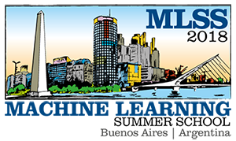

Nonparametric Bayesian Methods: Models, Algorithms, and Applications

This tutorial is took place at the 2018 Machine Learning Summer School (MLSS) at the Universidad Torcuato Di Tella, Buenos Aires, Argentina. See this link for the latest versions and videos of all tutorials.
Part 1: Tuesday, June 19, 5:15 PM–6:15 PM
Part 2: Wednesday, June 20, 9:00 AM–10:30 AM
Part 3: Wednesday, June 20, 11:00 AM–12:30 PM
Instructor:
Professor Tamara Broderick
Email: 
Description
This tutorial introduces nonparametric Bayes (BNP) as a tool for
modern data science and machine learning. BNP methods are useful in a
variety of data analyses---including density estimation without
parametric assumptions and clustering models that adaptively determine
the number of clusters. We will demonstrate that BNP allows the data
analyst to learn more from a data set as the size of the data set
grows and see how this feat is accomplished. We will describe popular
BNP models such as the Dirichlet process, Chinese restaurant process,
Indian buffet process, and hierarchical BNP models---and how they
relate to each other.
Materials
Prerequisites
Working knowledge of Bayesian data analysis. Know how
to use Bayes' Theorem to calculate a posterior for both discrete and
continuous parametric distributions. Have a basic knowledge of Markov
chain Monte Carlo (especially Gibbs) sampling for posterior
approximation.
What we won't cover
Gaussian processes are an important branch of nonparametric Bayesian modeling, but we won't have time to cover them here. We'll be focusing on the discrete, or Poisson point process, side of nonparametric Bayesian inference.